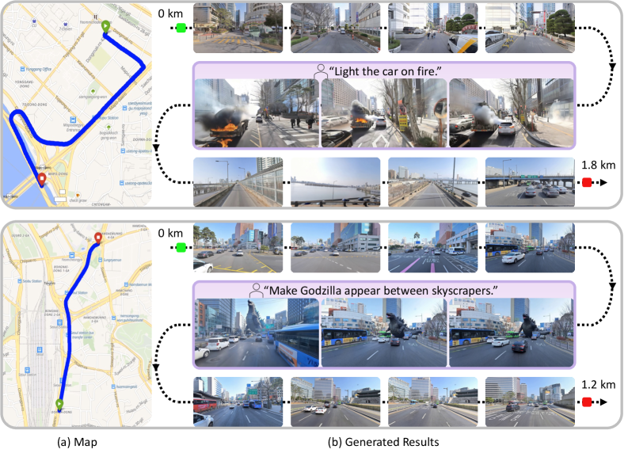
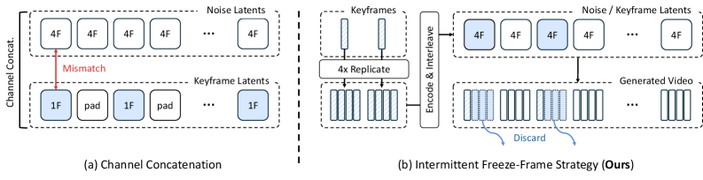
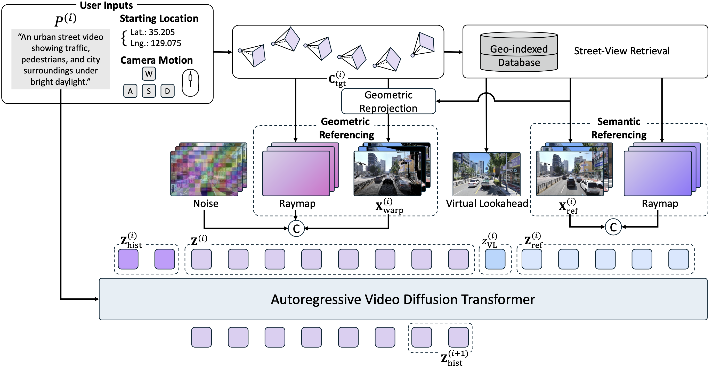
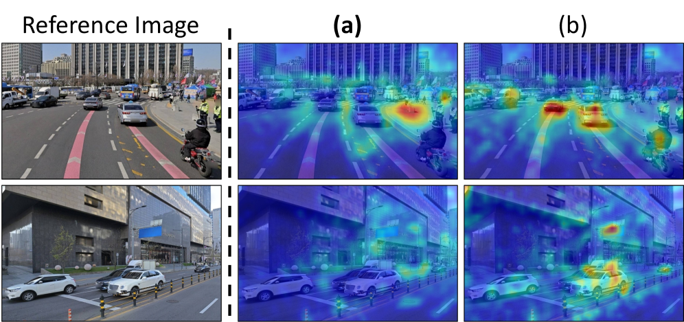
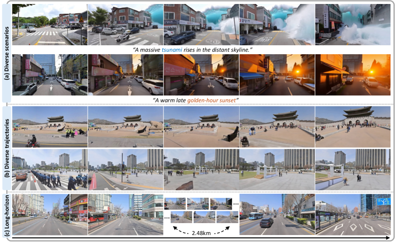
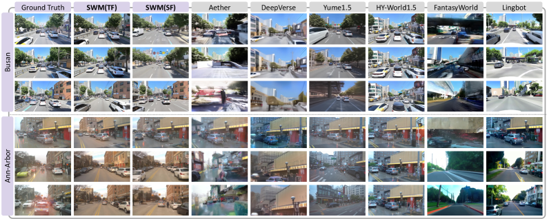
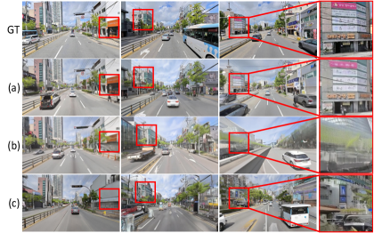
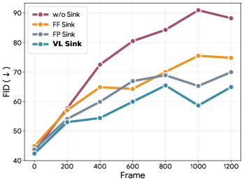
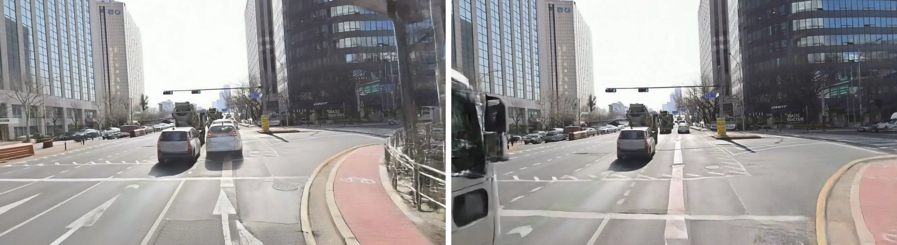

Seoul World Model
네이버 지도 스트리트뷰 120만 장으로 서울 시내를 통째로 시뮬레이션하는,
미친대단한 논문
- 원제: Grounding World Simulation Models in a Real-World Metropolis
- 저자: Junyoung Seo*, Hyunwook Choi* 외 11명 (KAIST AI, NAVER AI Lab, SNU AIIS)
- 발표: arXiv:2603.15583, 2026년 3월 16일
- 라이선스: CC BY-NC-SA 4.0
- 링크: arXiv | 프로젝트 페이지 | GitHub | PDF
1. 개요
Seoul World Model(이하 SWM)은 KAIST AI와 NAVER AI Lab이 합작해서 만든 도시 규모 월드 시뮬레이션 모델이다. 이름부터가 서울인데, 진짜로 서울이다. 네이버 지도에서 수집한 파노라마 이미지 120만 장을 기반으로, GPS 좌표와 카메라 궤적을 입력하면 실제 서울 거리의 영상을 생성해낸다.1

[그림 1] SWM이 서울 시내 1km 이상의 궤적을 따라 영상을 생성하는 모습. 지도 위의 카메라 경로를 입력하면 실제 그 거리를 걷는 것 같은 영상이 나온다. 텍스트 프롬프트로 "거리에 거대한 파도가 몰려온다" 같은 장면도 만들 수 있다.
서울시 방재 시뮬레이션에 쓸 수 있겠다
기존의 월드 모델들이 짧은 거리에서 금방 화질이 무너지는 것과 달리, SWM은 수백 미터에서 킬로미터 단위까지 에러가 누적되지 않고 영상을 생성한다. 비결은 검색 증강 생성(Retrieval-Augmented Generation, RAG)이다. 생성 중에 현재 위치 근처의 실제 스트리트뷰 이미지를 실시간으로 찾아서 참조하기 때문에, 길을 잃지 않는다. 네비게이션의 AI 버전
그냥 앞으로 달리는 자율주행 영상만 만드는 게 아니다. 보도를 산책하거나, 모퉁이를 돌거나, 고속도로를 질주하는 등 자유로운 카메라 움직임을 지원한다. 거기에 텍스트 프롬프트까지 먹여서 날씨를 바꾸거나 고질라를 소환하거나 판타지 요소를 현실 도시에 합성할 수도 있다.
2. 배경 및 관련 연구
2.1. 월드 모델이 대체 뭔데
월드 모델(World Model)은 한마디로 "현실 세계를 시뮬레이션하는 AI"다. 텍스트나 이미지 같은 입력을 받아서, 그 세계가 어떻게 보일지를 영상으로 만들어내는 모델이다.
왜 이게 필요하냐면, 자율주행을 예로 들어보자. 자율주행차를 학습시키려면 온갖 상황의 주행 데이터가 필요한데, 실제로 모든 상황을 경험시키기란 불가능에 가깝다. 역주행 차량이 갑자기 나타나는 상황을 일부러 만들 수는 없지 않나.2 월드 모델은 이런 가상 시나리오를 무한히 생성해서 학습 데이터로 쓸 수 있게 해준다.
NVIDIA의 Cosmos가 대표적인 월드 파운데이션 모델이고, Wayve의 GAIA-1, DriveDreamer 시리즈 등이 자율주행 특화 월드 모델로 유명하다.
2.2. 기존 연구의 한계
기존 월드 모델들은 대부분 두 가지 문제에 시달렸다.
첫째, 긴 거리를 못 간다. 자기회귀(autoregressive) 방식으로 영상을 조각조각 이어 붙이다 보면 에러가 눈덩이처럼 불어난다. 처음에는 멀쩡하던 건물이 3초 뒤에는 슬라임처럼 녹아내린다. 기존 방법들은 첫 프레임을 "닻"으로 삼아서 품질을 유지하려 했는데(Attention Sink라 부른다), 카메라가 멀어지면 이 닻의 힘도 약해진다. 닻줄이 짧으면 배가 떠내려가는 것과 같은 이치
둘째, 가짜 세계에서만 잘 된다. 게임 엔진이나 시뮬레이터 안에서는 완벽한 영상을 뽑아내지만, 실제 도시에 발을 딛는 순간 어설퍼진다. 실제 도시는 복잡하다. 간판, 가로수, 주차된 차, 걷는 사람들, 그리고 시간에 따라 바뀌는 모든 것들.
셋째, 카메라 움직임이 단조롭다. 대부분 "앞으로 직진"만 지원한다. 보행자 시점이나 자유로운 카메라 경로는 꿈도 못 꾼다.
2.3. 이 논문의 접근법
SWM은 이 세 가지를 동시에 해결한다.
- 긴 거리: Virtual Lookahead Sink라는 새로운 메커니즘으로, 생성 중에 앞으로 갈 곳의 실제 이미지를 미리 가져와서 닻으로 삼는다. 닻이 계속 갱신되니 아무리 멀리 가도 품질이 안 떨어진다.
- 실제 도시: 네이버 지도의 실제 스트리트뷰를 검색해서 참조하므로, 진짜 서울 거리가 나온다.
- 자유로운 카메라: CARLA 시뮬레이터에서 보행자, 차량, 자유 카메라 세 종류의 궤적 데이터를 대량 생산하여 학습시켰다.
3. 데이터셋 구축
데이터가 반이다. SWM의 데이터 구축 파이프라인은 그 자체로 하나의 논문감이다.

[그림 2] SWM의 데이터 구성. 왼쪽이 실제 스트리트뷰 데이터, 오른쪽이 CARLA 합성 데이터. 위성 지도 위에 촬영 궤적(빨간선)과 참조 이미지 위치(파란점)가 표시되어 있다.
3.1. 네이버 지도 스트리트뷰 120만 장
네이버 지도에서 수집한 서울 시내 파노라마 이미지가 무려 120만 장이다. 각 이미지에는 GPS 좌표와 촬영 시각 정보가 붙어 있다. 여기서 전처리를 거쳐 학습에 쓰인 건 약 44만 장.
커버리지가 어마어마한데, 동서 약 44.8km, 남북 약 31.0km를 아우른다. 서울의 주요 지역을 거의 다 커버한다고 보면 된다.3

[그림 11] SWM 학습 데이터의 서울 시내 커버리지. 점 하나하나가 스트리트뷰 촬영 지점이다.
서울 사는 사람은 자기 집 앞도 학습됐을 확률이 높다
개인정보 보호도 신경 썼다. 번호판과 보행자 얼굴은 전부 블러 처리했다. 네이버 지도가 원래 그렇게 하니까
3.2. CARLA 합성 데이터
실제 스트리트뷰만으로는 부족하다. 왜냐하면 네이버 지도 스트리트뷰는 기본적으로 촬영 차량이 도로 위를 달리면서 찍은 것이라, 보행자 시점이나 하늘을 나는 자유 카메라 궤적이 없다.
그래서 CARLA 시뮬레이터(Unreal Engine 기반)를 돌려서 합성 데이터를 만들었다. 6개의 도시 맵에서 총 431,500m² 면적을 커버하는 12,700개 영상을 생성했다.
궤적 유형은 세 가지다:
| 궤적 유형 | 설명 | 예시 |
|---|---|---|
| 보행자 | 인도, 횡단보도를 걷는 시점 | 산책, 출퇴근 |
| 차량 | 고속도로, 시내 도로 주행 | 자율주행 시나리오 |
| 자유 카메라 | 충돌 없는 임의 경로 |
각 스트리트뷰 참조 위치마다 8방향 뷰를 렌더링해서 총 4,000개 위치의 참조 이미지도 만들었다.
3.3. Cross-Temporal Pairing
여기서 핵심 트릭이 나온다. 학습할 때 참조 이미지와 타깃 영상의 촬영 시점을 일부러 다르게 매칭한다.
왜 그러냐면, 같은 시점의 이미지를 참조로 주면 모델이 "그냥 참조 이미지를 복사하면 되겠네"라고 학습해버린다. 주차된 차량, 지나가는 행인 같은 일시적 요소까지 그대로 베끼는 거다.
참조와 타깃의 시점을 다르게 하면, 모델은 "건물이나 도로 같은 영구적 구조물은 참조에서 가져오되, 차량이나 행인은 직접 생성해야 하는구나"를 배우게 된다. 쉽게 말해 뼈대만 베끼고 살은 스스로 붙이도록 훈련하는 것이다.4
3.4. View Interpolation
네이버 스트리트뷰 이미지는 키프레임 간 거리가 5~20미터다. 이걸 매끄러운 영상으로 만들려면 중간 프레임을 채워야 한다.

[그림 3] View Interpolation 파이프라인. 윗줄이 단순 채널 연결 방식, 아랫줄이 SWM의 Intermittent Freeze-Frame 방식.
아래가 훨씬 자연스럽다는 건 눈으로 봐도 안다
SWM은 Intermittent Freeze-Frame 전략을 쓴다. 각 키프레임을 4프레임 연속으로 반복하는 방식인데, 이게 3D VAE의 시간축 압축 비율(4배)과 정확히 맞아떨어진다. 덕분에 VAE가 각 키프레임을 정확히 하나의 잠재 벡터(latent)로 인코딩할 수 있다.
단순히 채널 연결(channel concatenation)로 키프레임을 주입하는 방식과 비교하면 차이가 확실하다:
| 방법 | PSNR↑ | SSIM↑ | LPIPS↓ |
|---|---|---|---|
| 채널 연결 | 22.52 | 0.628 | 0.245 |
| Intermittent Freeze-Frame | 25.03 | 0.703 | 0.162 |
PSNR 2.5점 차이는 사진으로 보면 확 체감된다.
4. 핵심 방법론
4.1. 모델 구조
SWM의 뼈대는 NVIDIA의 Cosmos-Predict2.5-2B다. 20억 파라미터짜리 Diffusion Transformer(DiT) 모델로, 28개 블록, 16개 어텐션 헤드, 2048 히든 차원을 가진다.

[그림 4] SWM 전체 아키텍처. 왼쪽에서 스트리트뷰 참조 이미지를 검색하고, Geometric/Semantic Referencing으로 처리한 뒤, Virtual Lookahead Sink와 함께 Diffusion Transformer에 넣어 영상을 생성한다.
영상 생성은 자기회귀 청크 방식이다. 한 번에 77프레임짜리 청크를 생성하고, 이전 청크에서 마지막 5프레임(History Latents)을 가져와 다음 청크의 시작점으로 쓴다. 청크마다 5개의 참조 이미지를 검색해서 조건으로 넣는다.
3D VAE가 시간축 4배, 공간축 8배 압축을 해서 16채널 잠재 공간으로 변환한다. 77프레임 영상이 잠재 공간에서는 아주 컴팩트해진다.
4.2. 스트리트뷰 검색 시스템
생성 중에 "지금 카메라가 어디에 있는지"를 기반으로, GPS 데이터베이스에서 가장 가까운 스트리트뷰 이미지를 찾아온다. 2단계 프로세스다:
- 최근접 이웃 검색: GPS 좌표 기반으로 가까운 이미지를 후보로 뽑는다
- 깊이 기반 필터링: 후보 이미지를 타깃 시점으로 투영했을 때 충분한 영역을 커버하는지 확인한다
커버리지가 부족한 이미지는 걸러내고, 최종적으로 청크당 K=5개의 참조 이미지를 선택한다.
4.3. Geometric Referencing
참조 이미지를 "기하학적으로" 활용하는 방법이다. 쉽게 말하면, 참조 이미지에 깊이 정보를 매핑해서 타깃 시점으로 변환(워프)한다.
수식으로 쓰면:
분해하면 별거 아니다:
- Unproj: 참조 이미지의 각 픽셀을 깊이 정보로 3D 점으로 올린다
- Render: 그 3D 점들을 타깃 카메라 시점으로 투영해서 새 이미지를 만든다
택배에 비유하면, 참조 이미지라는 상자를 한번 풀어서(3D로 복원) 다시 다른 각도에서 포장하는(타깃 시점으로 렌더링) 것이다.
깊이 추정에는 Depth Anything V3를 썼고, GPS 메타데이터로 스케일을 맞춘다. 타깃 프레임마다 가장 가까운 참조 하나만 쓰는데, 여러 개를 합치면 오히려 아티팩트가 생기기 때문이다.5
4.4. Semantic Referencing
Geometric Referencing이 "어디에 뭐가 있는지"를 알려준다면, Semantic Referencing은 "그게 정확히 어떻게 생겼는지"를 알려준다.
원본 참조 이미지를 그대로 인코딩해서 트랜스포머의 잠재 시퀀스에 이어 붙인다. 각 참조 이미지는 하나의 잠재 벡터로 압축되고, 패치 임베딩 후 시간축을 따라 연결된다.
여기서 카메라 포즈 정보를 어떻게 전달하느냐가 관건인데, Plücker ray 임베딩을 쓴다. Plücker ray는 3D 공간에서 직선을 표현하는 6차원 벡터인데, 카메라의 각 픽셀이 "어느 방향을 바라보고 있는지"를 담는다. RoPE(Rotary Position Embedding)로 시간 위치도 함께 인코딩한다.
그러니까 모델 입장에서는 "이 참조 이미지는 저기쪽에서 이 각도로 찍은 거야"를 정확히 알고 있는 셈이다.
4.5. Virtual Lookahead Sink
이 논문의 하이라이트다. 기존 월드 모델의 가장 큰 약점인 "긴 거리 생성 시 품질 저하"를 해결하는 핵심 메커니즘.

[그림 5] Virtual Lookahead Sink 메커니즘. 왼쪽의 기존 방식은 첫 프레임(빨간 별)에만 의존하다가 멀어지면 힘을 잃는다. 오른쪽의 VL Sink는 앞으로 갈 곳의 스트리트뷰(초록 별)를 미리 가져와서 닻으로 삼는다.
기존 Attention Sink는 생성 시퀀스의 맨 처음 프레임을 "닻"으로 고정하는 방식이다. 시작할 때는 좋지만, 카메라가 수백 미터를 이동하면 시작 지점의 이미지와 현재 풍경이 완전히 달라진다. 닻이 있으나 마나 한 상태.6
VL Sink는 발상을 뒤집었다. "이미 지나간 곳"이 아니라 **"앞으로 갈 곳"**의 이미지를 닻으로 쓴다. 구체적으로:
- 현재 생성 중인 청크의 앞쪽에서 가장 가까운 스트리트뷰 이미지를 검색한다
- 이걸 인코딩해서 시퀀스 끝에 "가상 미래 목적지"로 배치한다
- RoPE 포지션을 $H + L + \Delta_{\text{VL}}$로 설정한다 (추론 시 $\Delta_{\text{VL}} = 5$)
시퀀스 구성을 수식으로 쓰면:
첫 번째 줄은 히스토리, 타깃, VL Sink 잠재 벡터를 이어 붙이는 것이고, 두 번째 줄은 각각의 위치 정보다. VL Sink의 위치($H + L + \Delta_{\text{VL}}$)는 타깃 시퀀스보다 미래에 있으므로, 모델이 "저기로 가야 하는구나"를 인식한다.
이 닻은 청크가 바뀔 때마다 새로 검색되므로 항상 신선한 참조가 들어온다. 네비게이션으로 비유하면, 고정된 출발지가 아니라 계속 갱신되는 다음 목적지를 보고 운전하는 것과 같다.

[그림 6] VL Sink의 어텐션 스코어 시각화. VL Sink가 있을 때 모델이 미래 참조 이미지에 강하게 어텐드하는 것을 볼 수 있다.
AI도 앞을 보고 달려야 안전하다
5. 실험 및 결과
5.1. 실험 설정
학습 환경: NVIDIA H100 GPU 24장. 배치 사이즈 48. AdamW 옵티마이저에 학습률 4.8e-5. Teacher Forcing 단계에서 10K 이터레이션 학습.
학습 데이터 혼합 비율:
| 데이터 소스 | 비율 |
|---|---|
| 서울 스트리트뷰 | 40% |
| CARLA 합성 데이터 | 40% |
| Waymo 데이터셋 | 20% |
Waymo를 20% 섞은 건 실제 주행 영상의 다양성을 확보하기 위해서다.
Self-Forcing 단계: Teacher Forcing으로 학습한 체크포인트에서 ODE 초기화(1K 쌍, 6K 스텝) 후 10K 이터레이션 파인튜닝. 히스토리 3프레임, 참조 1개, 청크 길이 12프레임으로 줄인다. H100 한 장에서 15.2fps 달성.7
평가 벤치마크: 서울이 아닌 도시에서도 테스트했다.
- Busan-City-Bench: 부산 시내 30개 테스트 시퀀스, 각 365프레임(약 100미터)
- Ann-Arbor-City-Bench: 미국 미시간주 앤아버, MARS 데이터셋에서 30개 시퀀스. 학습에 한 번도 안 쓴 도시다.
비교 대상: Aether, DeepVerse, Yume1.5, HY-World1.5, FantasyWorld, LingBot 총 6개 베이스라인.
5.2. 정량적 결과
본 게임이다. 숫자로 말하자.
Busan-City-Bench 결과 (Table 1):
| 모델 | FID↓ | FVD↓ | Image Quality↑ | RotErr↓ | TransErr↓ | mPSNR↑ | mLPIPS↓ |
|---|---|---|---|---|---|---|---|
| Aether | 68.67 | 810.47 | 0.70 | 0.046 | 0.111 | 10.06 | 0.629 |
| DeepVerse | 68.73 | 1033.56 | 0.59 | 0.056 | 0.138 | 9.93 | 0.606 |
| Yume1.5 | 60.60 | 655.54 | 0.72 | 0.047 | 0.127 | 10.81 | 0.623 |
| HY-World1.5 | 71.00 | 731.44 | 0.65 | 0.059 | 0.188 | 10.97 | 0.575 |
| FantasyWorld | 52.70 | 637.36 | 0.69 | 0.038 | 0.070 | 12.43 | 0.524 |
| LingBot | 55.45 | 685.23 | 0.72 | 0.054 | 0.199 | 10.53 | 0.607 |
| SWM (TF) | 28.43 | 301.76 | 0.78 | 0.020 | 0.015 | 14.56 | 0.392 |
| SWM (SF) | 32.50 | 325.87 | 0.77 | 0.028 | 0.033 | 13.52 | 0.478 |
학살이다 압도적이다. FID 28.43은 2위 FantasyWorld(52.70)의 거의 절반이다. TransErr은 0.015로, 2위(0.070)의 1/5 수준. 모든 지표에서 1등이다.
Ann-Arbor-City-Bench 결과:
| 모델 | FID↓ | FVD↓ | Image Quality↑ | RotErr↓ | TransErr↓ | mPSNR↑ | mLPIPS↓ |
|---|---|---|---|---|---|---|---|
| SWM (TF) | 56.61 | 640.17 | 0.66 | 0.055 | 0.154 | 15.18 | 0.481 |
학습에 한 번도 안 쓴 미국 도시에서도 잘 된다. 물론 서울이나 부산보다는 숫자가 떨어지지만, 베이스라인들의 부산 성적과 비교해도 경쟁력 있는 수준이다. 범용성이 어느 정도 확보됐다는 뜻.
5.3. 정성적 결과
숫자만으로는 감이 안 올 수 있다. 실제 생성 결과를 보자.

[그림 7] SWM의 생성 결과. 다양한 시나리오에서 고해상도 영상을 생성한다. 건물 디테일, 도로 표시, 가로수까지 잘 재현된다.

[그림 8] 베이스라인과의 비교. SWM(맨 아래)이 건물 형태, 도로 구조, 전체적인 일관성에서 다른 모델들을 확실히 이긴다.
다른 모델들 화질이 안쓰럽다
텍스트 프롬프트로 장면을 조작하는 것도 된다. "거리에 거대한 파도가 몰려온다", "밤으로 바꿔라" 같은 프롬프트에 반응해서 재난 영화 같은 영상을 생성한다.
5.4. Ablation Study
각 구성 요소가 얼마나 기여하는지 하나씩 빼보는 실험이다.
구성 요소별 기여도 (Busan-City-Bench):
| 제거 요소 | FID↓ | FVD↓ | RotErr↓ | TransErr↓ | mPSNR↑ | mLPIPS↓ |
|---|---|---|---|---|---|---|
| 풀 모델 (SWM TF) | 28.43 | 301.76 | 0.020 | 0.015 | 14.56 | 0.392 |
| Cross-Temporal Pairing 제거 | 44.74 | 487.87 | 0.057 | 0.123 | 12.62 | 0.508 |
| 합성 데이터 제거 | 27.74 | 314.95 | 0.021 | 0.020 | 14.51 | 0.402 |
| Geometric Ref. 제거 | 33.01 | 342.64 | 0.036 | 0.026 | 13.58 | 0.434 |
| Semantic Ref. 제거 | 30.27 | 343.11 | 0.023 | 0.022 | 14.13 | 0.422 |
Cross-Temporal Pairing을 빼면 성능이 폭락한다. FID가 28에서 45로, 거의 두 배. 이게 제일 중요한 구성 요소라는 뜻이다.
합성 데이터를 빼면 FID는 오히려 살짝 내려가는데(27.74), TransErr은 올라간다. FID만 보면 합성 데이터가 필요 없어 보이지만, 카메라 제어 정확도에는 확실히 기여한다.
Attention Sink 변형 비교:
| Sink 방식 | FID↓ | RotErr↓ | TransErr↓ |
|---|---|---|---|
| Sink 없음 | 33.06 | 0.021 | 0.019 |
| 첫 프레임 Sink | 32.71 | 0.018 | 0.018 |
| 첫 위치 Sink | 32.41 | 0.026 | 0.022 |
| VL Sink (풀) | 28.43 | 0.020 | 0.015 |
VL Sink가 다른 변형을 확실히 이긴다. 첫 프레임 Sink와의 FID 차이가 4점 이상인데, 이 정도면 눈으로 봐도 차이가 난다.

[그림 9] Ablation 결과 시각화. 각 구성 요소를 제거했을 때 생성 품질이 어떻게 바뀌는지 보여준다.
장거리 생성 안정성 (1,460프레임, 약 400미터):
| Sink 방식 | FID↓ | mPSNR↑ | mLPIPS↓ |
|---|---|---|---|
| VL Sink | 25.13 | 13.70 | 0.480 |
| Sink 없음 | 37.37 | 12.94 | 0.575 |
| 첫 프레임 Sink | 30.85 | 13.08 | 0.534 |
| 첫 위치 Sink | 28.57 | 13.34 | 0.507 |
거리가 길어질수록 VL Sink의 위력이 빛난다. Sink 없는 모델과 FID 차이가 12점이나 벌어진다.

[그림 10] 생성 프레임 수에 따른 FID 변화. VL Sink(파란색)는 프레임이 늘어나도 안정적인 반면, 다른 방식들은 시간이 갈수록 품질이 급격히 떨어진다.
VL Sink 없이 장거리를 가는 건 네비 없이 초행길을 가는 것과 같다
6. 의의 및 한계
6.1. 의의
SWM은 몇 가지 측면에서 의미가 크다.
실제 도시 기반 최초급 모델. 기존 월드 모델들이 게임 엔진이나 특정 데이터셋에 갇혀 있었다면, SWM은 120만 장의 실제 스트리트뷰로 진짜 도시를 시뮬레이션한다. 도시계획가가 거리 리모델링 시안을 미리 보거나, 자율주행 테스트를 가상으로 돌리거나, 위치 기반 관광 콘텐츠를 만들 수 있다.
RAG 아키텍처의 영상 생성 적용. 텍스트 생성에서 검증된 RAG를 영상 생성에 성공적으로 적용했다. 검색으로 외부 지식을 끌어오는 패러다임이 영상 생성에도 먹힌다는 걸 보여줬다.
산학 협력의 좋은 사례. NAVER의 방대한 지도 데이터와 KAIST의 연구 역량이 만나서 가능한 결과물이다. 이런 규모의 데이터는 학교 연구실 혼자서는 절대 확보할 수 없다.8
6.2. 한계
논문 저자들도 솔직하게 인정하는 한계가 있다.
학습 데이터 품질에 종속적. 스트리트뷰가 촬영되지 않은 골목이나 건물 내부는 생성할 수 없다. 데이터가 없으면 AI도 상상력에 의존해야 하는데, 그러면 정확도가 떨어진다.
실제 영상이 아닌 합성 영상으로 학습. View Interpolation으로 만든 의사 영상(pseudo-video)으로 학습했기 때문에, 실제 연속 촬영 영상과는 미묘한 차이가 있을 수 있다.
일시적 불일치. 차량이 갑자기 나타났다 사라지는 현상이 가끔 발생한다. Cross-Temporal Pairing이 일시적 객체를 무시하도록 학습시켰지만, 완벽하지는 않다.

[그림 16] SWM의 실패 사례들. 차량이 갑자기 나타나거나 사라지는 경우가 있다.
유령 차량 목격담
7. 여담
SWM의 학습에 H100 GPU 24장이 동시에 동원됐다. H100 한 장의 시세가 대략 3~4만 달러인 걸 감안하면, GPU만 해도 수십억 원어치다.
대학원생의 연봉과는 비교를 불허한다물론 네이버 클라우드의 인프라를 썼을 테니 직접 구매한 건 아닐 것이다.논문의 공동교신저자(co-corresponding author)가 4명이다. 김진화(NAVER AI Lab, SNU), 김승룡(KAIST), 윤상두(NAVER AI Lab, SNU), 한동윤(NAVER AI Lab, KAIST). 교신저자가 4명인 논문은 흔치 않은데, 산학 협력 논문에서는 양쪽 기관의 책임자를 모두 넣는 경우가 있다. 김진화 박사는 Google Ph.D. Fellowship 수상자이자 CVPR 2018 VQA Challenge 준우승팀 멤버로, 멀티모달 딥러닝 분야의 유명 연구자다.9
논문이 공개된 2026년 3월은 공교롭게도 한국 정부가 구글에 지도 데이터 조건부 반출을 허가한 직후다. 18년간 끌어온 구글 지도 반출 논쟁이 마무리된 시점에, 네이버가 "우리 데이터로 이런 것도 된다"를 보여준 셈이다. 타이밍이 의도된 건지 우연인지는 알 수 없지만, 네이버 입장에서는 "지도 데이터의 가치"를 증명하는 좋은 무기가 됐을 것이다.
CARLA 시뮬레이터는 원래 자율주행 연구용으로 만들어진 오픈소스 프로젝트인데, 이 논문에서는 학습 데이터 생성기로 쓰였다. Unreal Engine 5 기반이라 그래픽이 꽤 현실적이다.
게임 엔진이 AI 학습에 이렇게 쓰일 줄은 에픽게임즈도 몰랐을 것이다평가 벤치마크로 부산과 미국 앤아버를 골랐다. 부산은 같은 한국이니 그렇다 쳐도, 왜 하필 앤아버인가 하면 MARS 데이터셋이 거기서 촬영됐기 때문이다. 미시간 대학교가 있는 도시로, 자율주행 연구의 메카 중 하나다.
Waymo도 앤아버에서 많이 테스트한다논문에서 텍스트 캡션 생성에 쓴 모델이 Qwen2.5-VL-72B다. 알리바바의 720억 파라미터 비전-언어 모델인데, 캡션 하나 생성하는 데 720억 파라미터짜리 모델을 돌린다.
데이터 만드는 데 드는 비용이 모델 학습 비용을 넘을 수도 있다Self-Forcing 학습 후 H100 한 장에서 15.2fps를 달성했다. 실시간(24~30fps)에는 못 미치지만, 모델 최적화(양자화, 디스틸레이션 등)를 더 하면 실시간 시뮬레이션도 가능할 수 있다. 네이버 지도에 "AI 스트리트뷰 산책" 기능이 추가되는 날이 올지도 모른다.
모델 이름에 "Seoul"이 들어간 만큼 서울 특화 모델이지만, 앤아버에서도 작동하는 걸 보면 데이터만 확보하면 다른 도시에도 적용 가능하다. "Tokyo World Model", "Paris World Model" 같은 후속작이 나올 가능성도 있다.
각 도시의 스트리트뷰 제공 업체와 협업만 된다면
8. 참고 문헌 및 외부 링크
- 원문 논문 (arXiv)
- 프로젝트 페이지
- GitHub 저장소
- NVIDIA Cosmos 플랫폼
- Wayve GAIA-1
- DriveDreamer 프로젝트
- CARLA 시뮬레이터
- KAIST CVLAB (김승룡 교수)
- NAVER AI Lab Generation Research
- Hugging Face 논문 페이지
- 구글 지도 반출 논쟁 (나무위키)
- Depth Anything V3
Footnotes
-
정확히 말하면 학습에 쓴 건 전처리 후 44만 장이다. 나머지 76만 장은 어디로 갔냐고? 품질 필터링에 걸렸다.
스트리트뷰 촬영 차량 앞에 트럭이 서 있으면 아무리 AI라도 답이 없다↩ -
물론 실제로 그런 영상이 블랙박스에 찍히긴 한다. 하지만 그걸 학습 데이터로 쓰려면 사고가 나야 하니까 윤리적으로 좀 곤란하다. ↩
-
참고로 네이버 지도의 스트리트뷰는 구글 스트리트뷰와 달리 한국 내 서버에 저장된다. 한국의 지도 데이터 해외 반출 규제 때문인데, 이 규제가 2026년 2월에 구글에 대해 조건부로 풀렸다. 이 논문의 타이밍이 절묘하다. ↩
-
이 Cross-Temporal Pairing 하나로 FID가 28.43에서 44.74로 뛰었다(낮을수록 좋다). 16점 차이면 하늘과 땅이다. 이 트릭 하나가 논문의 절반 값을 한다. ↩
-
이게 의외로 중요한 설계 결정이다. "많이 참조할수록 좋겠지"라고 생각하기 쉬운데, 서로 다른 시점에서 워프한 이미지를 합치면 깊이 불일치 때문에 유령 이미지(ghosting)가 생긴다. ↩
-
논문 Figure 5에서 이걸 아주 직관적으로 보여준다. 빨간 별(기존 닻)은 점점 흐려지는데 초록 별(VL Sink)은 항상 선명하다. ↩
-
15.2fps면 실시간에 가깝다. 사람 눈에 자연스러운 영상은 보통 24fps부터인데, 이 정도면 약간의 최적화만 더 하면 실시간 시뮬레이션이 가능하다는 뜻이다. ↩
-
120만 장의 스트리트뷰 파노라마 데이터를 가진 한국 기업은 네이버와 카카오 정도다. 구글 스트리트뷰는 한국에서 제한적이었고(지도 반출 규제 때문), 2026년 2월에야 조건부 반출이 허가됐다. ↩
-
김진화 박사는 서울대에서 장병탁 교수 지도 하에 "Multimodal Deep Learning for Visually-grounded Reasoning"으로 박사학위를 받았고, 2017년 Facebook AI Research에서 인턴을 했다. ↩